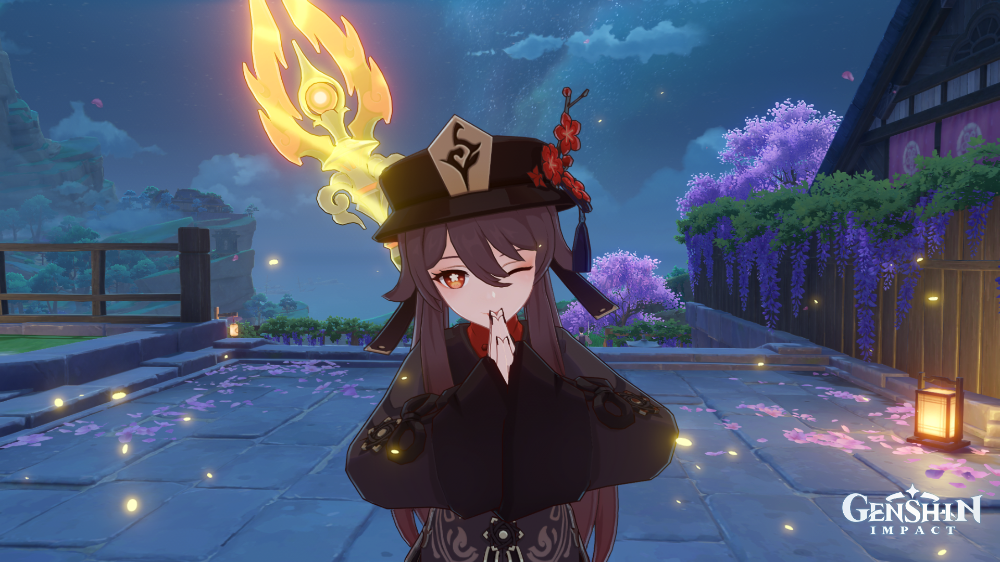

As you might guess, this is my favorite character from the game "Genshin Impact". Since her debut i loved her voice and also her attitude, that's why now i feel like this is the right way to express those feelings.

Information about my very own Hu Tao
Attributes on my Hu Tao. I feel very satisfied with how i've built her.
More detailed information about my Hu Tao.
I got lucky on her first banner and got her signature weapon.
A basic but very powerfull team for Hu Tao, i sometimes change Ganyu for Diluc just for that pyro resonance even tho i know it doesn't goes well with Hu Tao.
Hu as in "Who put me in this coffin?" and Tao as in "I can't geT OUt!" Hehe... No, not funny?
-Hu Tao, the 77th Director of the Wangsheng Funeral Parlor
Need some funeral services?
Your time is now, sign up to receive the best discounts.